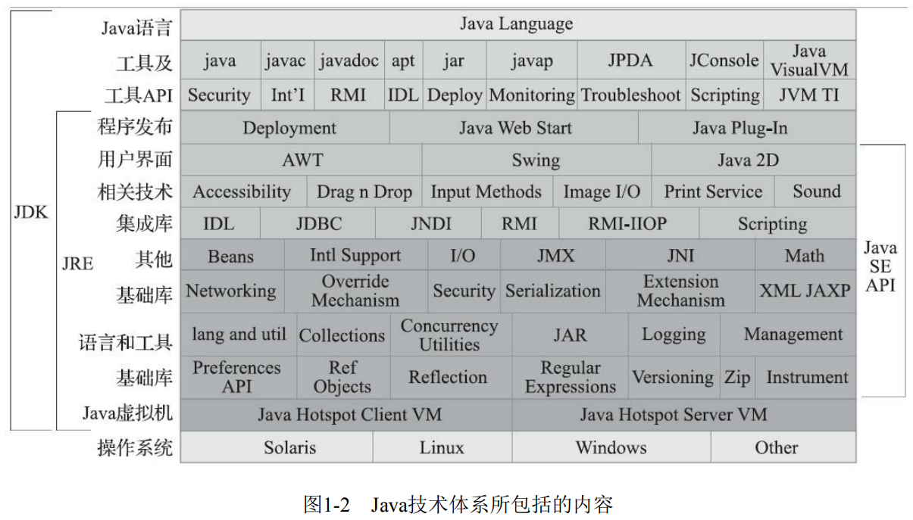
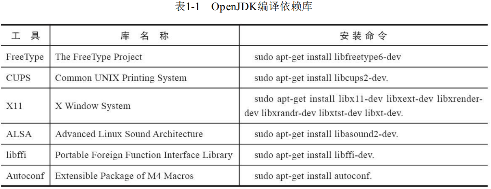

1. Java技术体系
Java技术体系可以分为以下四条主要的产品线：
Java Card：支持Java小程序(Applets)运行在小内存设备(如智能卡)上的平台Java ME(Micro Edition)：针对Java程序运行在移动终端上的平台，对Java API有所精简，并加入了移动终端的针对性支持Java SE(Standard Edition)：支持面向桌面级应用的Java平台，提供了完整的Java核心APIJava EE(Enterprise Edition)：支持使用多层架构的企业应用的Java平台，除了提供 Java SE API 外，还对其做了大量有针对性的扩充，并提供了相关的部署支持

2. Java虚拟机家族
2.1. 虚拟机始祖：Sun Classic/Exact VM
- Classic VM 只能使用纯解释器方式来执行Java代码，如果要使用即时编译器就必须进行外挂
- Sun 提供的外挂编译器名为 sunwjit 。但是解释器和编译器不能配合、同时工作
- JDK 1.2 时，曾在 Solaris 平台上发布过一款名为 Exact VM 虚拟机，它的编译执行系统已经具备现代高性能虚拟机的雏形，如：热点探测、两级即时编译器、编译器与解释器混合工作模式 等
- Exact VM 因他使用 准确式内存管理(Exact Memory Management) 而得名：即虚拟机可以知道内存中某个位置的数据具体是什么类型
- 由于使用了准确式内存管理，Exact VM 可以抛弃以前 Classic VM 基于句柄的对象查找方式
2.2. 武林盟主
- HotSpot 既继承了 Sun 之前两款商用虚拟机的优点，也有许多自己新的技术优势，如它名称中的 HotSpot (热点代码探测技术)
- 如果一个方法被频繁调用，或方法中有效循环次数很多，将会分别触发 标准即时编译 和 栈上替换编译 行为
2.3. 小家碧玉：Mobile/Embedded VM
- Oracle 公司在Java ME这条产品线上的虚拟机名为 CDC-HI(Connected Device Configuration-Hotspot Implementation) 和 CLDC-HI(Connected Limited Device Configuration-Hotspot Implementation)
- CDC/CLDC 式一组在 JSR-139 和 JSR-218 规范中进行定义的Java API子集，这组规范希望在移动设备上建立统一的Java编程接口，上述两个虚拟机就是此组规范的参考实现
- Java SE Embedded 里是 HotSpot 虚拟机，但为了适应嵌入式环境专门定制了裁剪的版本，尽可能在支持完整的 Java SE 功能的前提下向着减少内存消耗的方向优化
2.4. 天下第二：BEA JRockit/IBM J9 VM
- BEA System 公司的 JRockit 专注于服务端应用，因此其内部不包含解释器实现，全部代码依靠即时编译器编译后执行
- JRockit 随着 BEA 被 Oracle 收购，现已不再继续发展，永远停留在 R28 版本
- IBM J9 虚拟机的职责分离与模块化做得比 HotSpot 更优秀
2.5. 软硬合璧：BEA Liquid VM/Azul VM
- Liquid VM 也被称为 JRockit VE(Virtual Edition) ，它是BEA公司开发的可以直接运行在自家 Hypervisor 系统上的 JRockit 虚拟机的虚拟化版本
- Liquid VM 本身不需要操作系统的支持，他自己实现了一个专用操作系统的必要功能，从而最大限度地发挥了硬件的能力，提升了Java程序的执行性能
- Azul VM 是 Azul Systems 公司在 HotSpot 基础上进行大量改进，运行于自家 Vega 系统上的Java虚拟机
2.6. 挑战者：Apache Harmony/Google Android Dalvik VM
- Apache Harmony 是一个 Apache 软件基金会旗下以 Apache License 协议开源的实际兼容于JDK 5和JDK 6的Java程序运行平台，它含有自己的虚拟机和Java类库API
- Dalvik 虚拟机并不是一个Java虚拟机，它没有遵循《Java虚拟机规范》，不能直接执行Class文件。它使用的是寄存器架构而非常见的栈架构
- Dalvik虚拟机曾是Android平台的核心组成部分之一，和Java有千丝万缕的联系：
- 它执行的DEX文件可以通过Class文件转换得来
- 它使用Java语法编写应用程序，可以直接使用绝大多数Java API
- 但是等到 Android 4.4 ，支持提前编译的ART虚拟机迅速崛起，并在 Android 5.0 里全面替代了 Dalvik 虚拟机
3. 实战：自己编译JDK
3.1. 获取源码
- 目前，OpenJDK 和 OracleJDK 代码实质上以达到完全一致的程度，所以我们编译的 OpenJDK 基本上可以认为性能、功能和执行逻辑上都和官方的 OracleJDK 是一致的
- 此次编译实践我们选择的版本是：OpenJDK 12
- 获取源码有以下两种方式：
- 直接从 repository 中 clone 源码到本地
- 从JDK的仓库中下载源码的压缩包
3.2. 系统需求
- 推荐在 Linux 或 MacOS 上构建 OpenJDK ，这两个系统在准备构建工具链和依赖项上要比在 Windows 或 Solaris 平台上要容易
- 原书作者使用的是 Ubuntu 18.04 LTS ，我用的是 CentOS 7
3.3. 构建编译环境
- Linux 系统中需要使用 GCC 或 CLang 来编译，最低版本为 GCC 4.8 或 CLang 3.2，官方推荐版本为 GCC 7.8 或 CLang 9.1
- OpenJDK 全部的依赖库如下所示
- 